의공산업기사 (2014-03-02 기출문제)
1과목: 기초의학 및 의공학
1. 두 개의 코일을 같은 축 방향으로 배열하여 상호 인덕턴스의 변화로부터 위치 변화를 측정하는 센서의 종류는?
- 압전센서
- 유도성 센서
- 서미스터
- 열전쌍
(정답률: 87%)

2. 세포막을 통한 물질이동 능동수송에 대한 설명으로 옳지 않은 것은?
- 세포는 세포내에 k+는 높게, Na+는 낮게 유지한다.
- 에너지를 사용하여 물질이 이동된다.
- 농도 경사에 반대하여 운반되는 물질이동 방식을 능동수송이라 한다.
- 포도당이나 아미노산은 농도 경사에 반대되는 능동수송이 일어나지 않는다.
(정답률: 90%)
3. 직육면체의 금속에 열을 가하고 길이의 변화에 따른 저항을 측정하였다. 열에 의해 금속의 길이는 20% 늘어났고, 면적은 10% 증가하였다. 저항계수가 열에 의해 10% 증가 하였다면 총 저항의 변화율은?
- 10% 감소
- 10% 증가
- 20% 감소
- 20% 증가
(정답률: 88%)
4. 심전도 파형의 의미로 옳지 않은 것은?
- T 파는 심방의 재분극
- Q 파는 심실 격벽의 탈분극
- R 파는 심실의 탈분극
- P 파는 심방의 탈분극
(정답률: 78%)
5. 다음은 해부학적 방향에 대한 용어 설명이다. 해당되는 방향은?
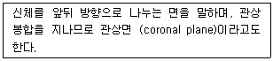
- 정중면 (median plane)
- 전두면 (frontal plane)
- 시상면 (sagittal plane)
- 횡단면 (transverse plane)
(정답률: 94%)
6. 함기강으로 두개골의 일부에 공기가 차 있는 공간을 가짐으로써 얻을 수 있는 효과는?
- 신체에 산소를 공급해 준다.
- 살균 작용을 도와준다.
- 세포 생성을 도와준다.
- 뼈의 무게를 가볍게 해준다.
(정답률: 85%)
7. 신경전달 물질 중 대표적인 흥분성 신경전달 물질이 아닌 것은?
- 가바 (GABA)
- 도파민 (DOPAMIN)
- 에피네프린 (EPINEPHRINE)
- 아세틸콜린 (ACETYLCHOLINE)
(정답률: 88%)
8. 동잡음(motion artifact)을 줄이는 방법이 아닌 것은?
- 전극이 피부에서 움직이지 않도록 고정한다.
- 전극선의 움직임에 따라 전극도 같이 움직이도록 한다.
- 관절부위에 부착하지 않는다.
- 전극과 피부사이에 전해질이 마르지 않도록 한다.
(정답률: 94%)
9. 다음 전극 중 순간적으로 가장 많은 전류가 흐를 수 있는 것은?
- 심전도(ECG) 측정용 전극
- 뇌전도(EEG) 측정용 전극
- 근전도(EMG) 측정용 전극
- 심장 제세동기(defibrillator)용 전극
(정답률: 98%)
10. 분극 전극에 대한 설명으로 옳은 것은?
- 저항성 특성을 보인다.
- 은-염화은 전극이 있다.
- 장시간 사용이 불가능하다.
- 고주파 신호의 측정에 적합하다.
(정답률: 74%)
11. 초음파 영상을 구성할 때 측정하는 것이 아닌 것은?
- 초음파의 세기 측정
- 초음파의 이동시간 에너지
- 초음파의 출력에너지 측정
- 반사되는 초음파의 세기 측정
(정답률: 74%)
12. 다음 ECG의 측정방법 중 팔다리에서 측정하는 신호가 아닌 것은?
- LEAD I
- aVF
- V6
- aVR
(정답률: 91%)
13. 근육의 현미경적 소견에서 볼 수 있는 구조물 중 근육이 수축하면 좁아지는 것은?
- Z line
- A band
- H zone + I zone
- M line
(정답률: 91%)
14. 다음 중 폐활량(Vital Capacity) 에 포함되지 않는 것은?
- 잔기량 (Residual Volume)
- 예비흡기량 (Inspiratory Reserve Volume)
- 예비호기량 (Expiratory Reserve Volume)
- 1회 호흡량 (Tidal Volume)
(정답률: 82%)
15. 용량성 센서의 용량값을 변화시킬 수 있는 방법이 아닌 것은?
- 두 평행판의 마주하는 간격을 변화
- 두 평행판의 마주하는 면적을 변화
- 두 평행판 사이의 자성체를 변화
- 두 평행판 사이의 유전체를 변화
(정답률: 71%)
16. 다음 그림은 폐용적과 폐용량을 나타낸 그래프이다. 그림 중 B가 가리키는 것은?
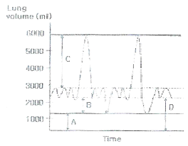
- 잔기량 (residual volume)
- 호기예비량 (expiratory reserve volume)
- 흡기예비량 (inspiratory reserve volume)
- 기능적 잔기용량 (functional residual capacity)
(정답률: 80%)
17. 바이오 센서에서 원하는 물질을 검출하기 위해 이용하는 것이 아닌 것은?
- 효소
- 미생물
- 면역반응
- 전해질
(정답률: 72%)
18. 형태에 따라 뼈를 분류할 때 단골 (short bones) 에 대한 설명으로 옳지 않은 것은?
- 요대를 형성하는 뼈이다.
- 수근골은 단골에 포함된다.
- 족근골은 단골에 포함된다.
- 손목이나 발목을 형성하는 뼈이다.
(정답률: 89%)
19. 생체신호 측정용 전극 중 침전극(needle electrode)에 대한 설명으로 옳지 않은 것은?
- 침전극은 앞단이 뾰족한 침, 일반적으로 스테인리스강으로, 절연을 위해 니스 등이 앞단을 제외하고 코팅 되어 있다.
- 동심일심침전극(Coaxial needle electrode)은 보통 근전도계측에 이용되며, 지름 0.3~0.4mm의 중공침 속에 절열된 0.1mm의 봉입침이 1개 들어 있는 것으로 도출 범위는 반경 1mm 정도이다.
- 동심이심침전극(Bipolar coaxial needle electrode)은 중공침 속에 2개의 봉입침을 넣은 것으로 각각의 전극 간격은 200~500㎛이며, 동심일침전극보다도 도출범위가 좁은 것이 특징이다.
- 전극을 체내에 삽입하여 측정하는 전극으로 세포외액이 존재하기 때문에, 생체전기현상을 전극으로 잘 전달하기 위하여 페이스트(Paste)를 사용하여야 한다.
(정답률: 80%)
20. 뼈 속에 있는 부위로 혈액을 생성하는 곳은?
- 황색골수
- 적색골수
- 흉선
- 비장
(정답률: 89%)
2과목: 의용전자공학
21. 입력주기 180° 미만에서 도통되도록 바이어스 되며, 전력증폭기로의 효율이 가장 좋은 것은?
- A급 증폭기
- B급 증폭기
- AB급 증폭기
- C급 증폭기
(정답률: 81%)
22. 전력이득 26[dB]인 증폭기 입력신호의 전력이 1[㎽]이면 출력신호의 전력은?
- 약 26[㎽]
- 약 260[㎽]
- 약 400[㎽]
- 약 800[㎽]
(정답률: 64%)
23. 호흡기의 기능평가 중 “폐 내에서 공기가 폐포 간에 균형 있게 분포하는 기능”에 대한 평가 기능은?
- 환기능
- 분포능
- 확산능
- 피폭능
(정답률: 92%)
24. 다음 중 DRAM의 특성이 아닌 것은?
- 일정시간 경과 후 기억된 정보가 소실된다.
- Refresh 기능이 필요하다.
- 직접도가 높고 SRAM에 비해 속도가 빠르다.
- 일반 PC의 주기억장치로 쓰인다.
(정답률: 76%)
25. 다음 중 P형 반도체에 대한 설명으로 옳은 것은?
- 정류작용을 갖고 있다.
- 다수캐리어가 전자이다.
- 3가 원소를 불순물로 첨가하였다.
- 불순물을 첨가하였으므로 저항률이 순수반도체(진성반도체)보다 크다.
(정답률: 69%)
26. 다음 [그림]과 같이 두 개의 저항이 병렬로 접속되어 있을 때 저항 R1에 흐르는 전류는? (단, R1=2[Ω], R2=3[Ω], 전압 : 12[V])
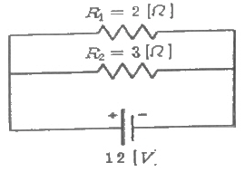
- 2[A]
- 4[A]
- 6[A]
- 8[A]
(정답률: 82%)
27. 다음 정류회로에 순방향전압강하가 0[V]인 이상적인 다이오드를 사용했다면 출력리플의 주파수는?
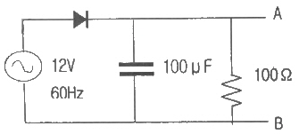
- 120[Hz]
- 100[Hz]
- 60[Hz]
- 50[Hz]
(정답률: 70%)
28. 다음 중 신호의 특성을 결정하는 요소가 아닌 것은?
- 주파수
- 위상
- 진폭
- 밴드 폭
(정답률: 85%)
29. JK 플립플롭에서 J = 1, K = 1 일 때, 출력(Q)의 값은?
- 0
- 1
- 불변
- 반전
(정답률: 77%)
30. 전자유량계의 원리는 다음 중 어떠한 법칙에 근거한 것인가?
- 렌쯔 (Lentz) 의 법칙
- 패러데이 (Faraday) 의 전자유도 법칙
- 플레밍 (Fleming) 의 왼손 법칙
- 앙페르 (Ampere) 의 법칙
(정답률: 98%)
31. RC 적분 회로와 같은 기능을 수행하는 필터는?
- 저역통과 필터
- 고역통과 필터
- 중역통과 필터
- 대역통과 필터
(정답률: 70%)
32. OR 게이트 출력 A+B에 NOT 게이트를 취한 게이트는?
- AND 게이트
- NAND 게이트
- NOR 게이트
- XOR 게이트
(정답률: 78%)
33. 도체 내에서 두 점 사이에 10[C]의 전하를 옮기는데 50[J]의 에너지가 필요하였다면 두 점 사이의 전압은?
- 0.5[V]
- 5[V]
- 50[V]
- 500[V]
(정답률: 87%)
34. 생체계측 측정시스템에서 접지(ground)의 목적이 아닌 것은?
- 전기기구에서 발생될 수 있는 위험한 전압으로부터 사람을 보호하기 위해서
- 과도현상에 의한 장비의 오동작이나 손상을 방지하기 위해서
- 전자 시스템으로 결합된 잡음을 감소시키기 위해서
- 증폭기에서 출력 전류의 전압이득을 위해 입력단자와 연결하기 위해서
(정답률: 88%)
35. 광학적 계측시스템에서 쓰이는 광원이 아닌 것은?
- 텅스턴램프
- 레이저
- 아크방전
- 피에조크리스탈
(정답률: 85%)
36. 콘덴서식 X-선 발생장치에서 사용하는 고압 콘덴서의 용량이 4[㎌]이다. 이 콘덴서를 60[kV]로 충전시켰을 때 콘덴서에 축적되는 에너지는?
- 60[J]
- 240[J]
- 3600[J]
- 7200[J]
(정답률: 60%)
37. IB=40㎂이고, IC=4㎃가 흐르는 트랜지스터 IE 는 얼마인가?
- 1.28[㎃]
- 2.02[㎃]
- 3.96[㎃]
- 4.04[㎃]
(정답률: 78%)
38. 수정 발진기의 주파수 안정도가 양호한 이유에 해당되는 것은?
- 수정편의 Q가 매우 높다.
- 수정 진동자는 온도 특성이 안정하다.
- 발진조건을 만족시키는 유도성 주파수 범위가 아주 넓다.
- 부하 변동의 영향을 전혀 받지 않는다.
(정답률: 75%)
39. 불 함수식
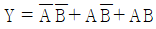
를 간략화한 식은?- A+B
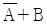
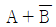
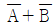
(정답률: 85%)
40. 면적은 S[m2]이고 극간 거리가 d[m], 비 유전율 εs, 진공의 유전율 εo 인 유전체를 채운 평행판 콘덴서의 정전용량은 몇 [F] 인가?
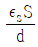
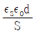
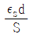
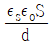
(정답률: 71%)
3과목: 의료안전ㆍ법규 및 정보
41. 정보 보안과 통제를 위한 기술 및 도구에 해당하지 않은 것은?
- 스니퍼
- 암호화
- 전자인증
- 방화벽
(정답률: 84%)
42. 진단용 방사선 발생장치가 아닌 것은?
- 치과진단용 엑스선 발생장치
- 유방촬영용 장치
- 초음파 장치
- 전산화 단층 촬영장치
(정답률: 84%)
43. 단말 구까지 공급된 의료용 가스 및 흡인, 공기가 최종적으로 환자에게 투여되기 위해 필요한 것은?
- Wall suction unit
- shut off valve
- alarm system
- copper tube piping
(정답률: 78%)
44. PACS의 영상 획득부에서 사용하는 장치는?
- film digitizer
- ODJ
- ATM
- 플로터
(정답률: 88%)
45. 의료기기의 등급분류 기준에서 인체에 미치는 위해도가 가장 높은 등급은?
- 1등급
- 2등급
- 3등급
- 4등급
(정답률: 81%)
46. 다음 중 데이터베이스의 특성으로 옳지 않은 것은?
- 실시간 접근성
- 계속적인 변화
- 내용에 의한 창조
- 단일 공유
(정답률: 74%)
47. 의료법상 의료기관 인증에 대한 이의신청 시 이의신청은 평가결과 또는 인증등급을 통보 받은 날부터 며칠 이내에 하여야 하는가?
- 1주일 이내
- 15일 이내
- 30일 이내
- 즉시
(정답률: 65%)
48. 다음 중 HL7에 대한 설명과 관계없는 것은?
- 이벤트 중심의 프로토콜 메시지 단위로 정보 전송이 이루어진다.
- 서로 다른 보건의료분야 소프트웨어 애플리케이션간 정보가 호환될 수 있도록 하는 규칙의 집합을 의미한다.
- 원격지간의 의학영상의 전송, 공동 판독 등을 지원하는 의학 영상처리 시스템이다.
- 사용자, 시스템 공급자 및 기타 의료정보 이해관계자들에 의해 합동으로 개발되었다.
(정답률: 80%)
49. 다음 중 의료정보관련 국제 표준이 아닌 것은?
- HL7
- DICOM
- SNOMED
- PACS
(정답률: 92%)
50. 전기쇼크 방지 방법에 대한 설명으로 옳지 않은 것은?
- 환자를 모든 접지된 물체나 모든 전류 원 으로부터 분리시키거나 절연시키는 것이다.
- 환자가 닿을 수 있는 모든 전도체를 같은 전위(등전위) 상태로 유지하고, 반드시 접지 전위로 만들어야 한다.
- 의료용 접지방식을 준수하여 전기쇼크를 방지한다.
- 장치설계 시 전기쇼크 안전을 고려하고, 사용 절차 중 전시쇼크 방지에 주의한다.
(정답률: 76%)
51. 다음 중 전자파 장애(EMI)를 바르게 설명한 것은?
- 전자 방해 파에 의해 일어나는 기기, 장치 또는 시스템의 성능 저하
- 방해 전자파를 발생시키지 않으면서 동작하는 기기 또는 시스템의 능력
- 전자 방해파가 있어도 정상적으로 작동되는 시스템
- 부수적 전자파가 기기의 동작에 영향을 미치지 않는 능력
(정답률: 84%)
52. 수술 장면의 인터넷 방송과 같이 영상파일을 다운로드 받아서 보는 것이 아니라 실시간 또는 일부만 전송되더라도 바로 재생할 수 있는 기술을 무엇이라고 하는가?
- VOD 기술
- MPEG 기술
- Dithering 기술
- Streaming 기술
(정답률: 89%)
53. 네트워크 장비 중에서 외부 망으로부터의 침입을 규제하고 내부 데이터의 불법 유출을 막기 위해 외부 망과의 접속점에 설치하는 하드웨어 및 소프트웨어를 무엇이라고 하는 가?
- Gateway
- Router
- Hub
- Firewall
(정답률: 78%)
54. 의료용 가스 중앙 파이프 시스템에 필요한 요건이 아닌 것은?
- 안정된 가스 압이 유지되어야 한다.
- 다른 종류의 가스를 제공해서는 안 된다.
- 고 순도의 가스가 의료가스 아우트렛(outlet)으로부터 제공되어야 한다.
- 가스를 제공하는 데 있어서 필요시에 일시적인 중단을 할 수 있어야 한다.
(정답률: 70%)
55. 의료기기 안전에 관한 사항 중 열적안정은 물체의 온도가 1시간동안 몇 도 이상 상승되지 않은 상태를 의미하는가?
- 1℃
- 2℃
- 10℃
- 20℃
(정답률: 71%)
56. 의료법상 각 중앙회가 자격정지 처분 요구에 관한 사항을 심의-의결하기 위하여 두는 것은?
- 윤리위원회
- 지부
- 분회
- 심의위원회
(정답률: 62%)
57. 컴퓨터에서 사용하는 정보의 양 단위인 1 킬로바이트[KB]는 다음 중 어느 것과 같은 가?
- 100 바이트
- 1024 바이트
- 1000000 바이트
- 1024000 바이트
(정답률: 96%)
58. 의료기기법령상 의료기기 제조업 허가를 받을 수 있는 사람은?
- 한정치산자
- 마약 중독자
- 복권된 파산자
- 정신질환자
(정답률: 83%)
59. 의료영상시스템 도입이 필요한 이유로 적당하지 않은 것은?
- 필름을 찾기 위해 소모되었던 의료관련 종사자들의 인력 낭비의 문제
- 필름 기반 시스템의 초기 구축비용의 증가
- 폐 필름, 현상 시 생기는 공기오염, 폐기물 처리 등의 문제
- 필름 보관상의 문제
(정답률: 87%)
60. 의료기기법상 의료기기의 수리업자가 준수하지 않아도 되는 것은?
- 허가를 받거나 신고한 내용과 다르게 변조하여 의료기기를 수리하지 말 것
- 의료기기를 수리한 경우 수리내용을 관할 시-도지사에게 제출할 것
- 의료기기를 수리한 경우에는 상호 및 주소를 해당 의료기기의 용기 또는 외장에 기재할 것
- 의료기기의 수리를 의뢰한 자에 대하여 수리내역을 문서로 통보할 것
(정답률: 85%)
4과목: 의료기기
61. 초음파 치료기에 대한 설명으로 옳지 않은 것은?(오류 신고가 접수된 문제입니다. 반드시 정답과 해설을 확인하시기 바랍니다.)
- 진동 주파수가 17~20[㎑] 이상인 불 가청 진동음파를 이용한다.
- 교류치료를 발생시키는 심부 열 치료기이다.
- 금속 삽입물이 생체조직 내에 있을 경우는 사용할 수 없다.
- 조직에 초음파를 적용하면 조직 분자에서 열에너지로 전환시킨다.
(정답률: 42%)
62. 전기치료기를 열의 전달방법에 의해 분류할 때 이에 해당하지 않는 것은?
- 전도방식
- 대류방식
- 복사방식
- 증발방식
(정답률: 61%)
63. 다음 중 수액펌프의 주된 용도는?
- 수압을 낮추기 위해서
- 환자의 혈액 순환을 돕기 위해서
- 수액을 정확하게 제어하기 위해서
- 환자의 체온을 일정하게 유지하기 위해서
(정답률: 81%)
64. 다음 중 혈액투석의 단점으로 옳은 것은?
- 스케줄에 맞게 주 2~3회 투석실에 와야 한다.
- 신체에 카테터를 달고 있어야 하므로 세균침입에 대해방어기구가 없어 염증 유발이 쉽다.
- 복막투석에 비해 꽤 큰 물질도 통과시키기 때문에 혈중의 단백질, 비타민 등이 소실될 수 있다.
- 포도당이 체내에 흡수되기 때문에 비만이나 고지혈증의 위험이 크다.
(정답률: 80%)
65. 자기공명영상(MRI)시스템의 구성 요소 중 주자석(초전도전자석)의 자계 균일도를 높이기 위해 추가적으로 사용되는 코일은?
- Choke coil
- Gradient coil
- RF coil
- Shimming coil
(정답률: 79%)
66. 방사선 진단기기의 X-선관에 대한 설명으로 옳지 않은 것은?
- 전자를 발생시키는 음극과 전자가 충돌하는 양극, 양극위의 작은 점에 전자를 집속시키는 집속통이 있다.
- 전자가 양극에 충돌하면 전자의 운동에너지 대부분이 X-선 에너지로 변화되고 일부분이 열로 변환된다.
- 양극의 재질은 열전도율이 좋으면서도 용융점이 높은 텅스텐이 많이 사용된다.
- X-선관의 주요 성능지표로 관전압, 관전류, 초점크기가 있다.
(정답률: 66%)
67. 전기수술기에 대한 설명으로 옳지 않은 것은?
- 절개는 응고보다 더 높은 출력을 필요로 하기 때문에 응고시킬 때보다 낮은 주파수의 전류를 사용한다.
- 전기수술기의 작용은 절개, 응고, 지혈이다.
- 대극판은 체내에 흐르는 전류를 다시 본체로 돌려보내는 역할을 한다.
- 대극판은 항상 인체와 접촉면이 넓어야 한다.
(정답률: 61%)
68. 다음 중 인큐베이터의 기본 기능으로 옳지 않은 것은?
- 온도조절
- 습도조절
- 환기조절
- 냉동조절
(정답률: 82%)
69. 최고혈압과 최저혈압이 가각 130㎜Hg, 90㎜Hg로 예상되는 경우 압박대의 초기 압력은 얼마가 적절한가?
- 100㎜Hg
- 120㎜Hg
- 160㎜Hg
- 180㎜Hg
(정답률: 79%)
70. 제세동기의 원리에 대한 설명으로 옳은 것은?
- 제세동기는 강한 전기 에너지를 사용하여 불규칙적으로 움직이는 심근세포들을 동시에 탈 분극 시켜서 절대적인 불응기를 만든다.
- 심근이 약 80% 이상 탈분극이 되면 제세동의 성공률이 낮아진다.
- 높은 성공률을 위해 최대한 강한 에너지를 사용하는 것이 좋다.
- 제세동의 역치는 시간에 따라 증가하거 감소하지 않는 값이다.
(정답률: 76%)
71. 다음 중 분광 광도법으로 검사할 수 없는 항목은?
- 성분 검사
- 혈청 검사
- 적혈구/백혈구 검사
- 호르몬 검사
(정답률: 78%)
72. 음향 임피던스(acoustic impedance)에 대한 설명으로 옳지 않은 것은?
- 음향 임피던스는 물질의 밀도와 음속의 곱으로 결정된다.
- 음향 임피던스의 단위로는 dB을 사용한다.
- 초음파 트랜스듀서는 전기에너지와 음파에너지 서로를 변환할 수 잇는 소자이다.
- 초음파 트랜스듀서는 공명주파수를 갖는다.
(정답률: 74%)
73. 다음 방사선 단위 중 등가선량의 단위는?
- 뢴트겐[R]
- 그레이[Gy]
- 시버트[Sv]
- 베크렐[Bq]
(정답률: 61%)
74. 초음파의 영상촬영 방식 중 인체 내부의 단면상을 보여주는 방식은?
- A-mode
- B-mode
- M-mode
- TM-mode
(정답률: 81%)
75. 적외선 및 가시광선을 인체 내에 투과하여 인체 내에서의 광 흡수도를 비교하여 측정할 수 있는 것은?
- 혈압
- 체온
- 폐활량
- 혈중산소포화농도
(정답률: 87%)
76. 신생아 보육기의 구성요소가 아닌 것은?
- 기화기
- 히터
- 산소공급기
- 무호흡감지기
(정답률: 67%)
77. 심박출량 측정법 중 저온이나 고온의 액체(식염수)를 지시물질로 주입하여 서미스터 등으로 검출하는 방법은?
- 온도 희석법
- 임피던스 희석법
- 지시약 희석법
- Fick's 법
(정답률: 80%)
78. 일반적으로 환자가 참을 수 있을 정도의 전극으로 자극, 근 수축을 유발하여 중추신경계 환자의 재활치료에 이용하는 치료기기는?
- ICT
- SSP
- TENS
- FES
(정답률: 53%)
79. 체외파충격쇄석기의 에너지 발생원 중 금속막을 전자석으로 진동시켜 발생되는 압력파를 집속하여 충격파를 만드는 방식은?
- 수중방전 방식
- 전자진동 방식
- 미소발파 방식
- 압전소자 방식
(정답률: 73%)
80. 체외충격파쇄석기의 구성요소가 아닌 것은?
- 충격파전달매체
- 위치측정 장치
- 온도조절장치
- 충격파발생장치
(정답률: 80%)
5과목: 의용기계공학
81. 스테인리스강을 구성하는 원소의 역할이 잘못 설명된 것은?
- Mo(몰리브덴): 내 부식성을 향상시킨다.
- Ni(니켈): 실온에서 가공성을 높여준다.
- Cr(크롬): 부식을 억제한다.
- C(탄소): 마모성을 향상시킨다.
(정답률: 63%)
82. 가시광선보다 파장이 길어서 눈에 보이지 않고 열작용이 크고 침투력이 강하며, 유기화합물 분자에 대한 공진 및 공명 작용이 강한 것은?
- 자기력선
- 자외선
- 원적외선
- 방사선
(정답률: 69%)
83. 주파수 100㎐에서 도전율이 가장 높은 조직은?
- 골격근
- 혈액
- 지방
- 간장
(정답률: 68%)
84. 다음 중 음파의 반사나 굴절을 결정짓는 요소는?
- 주파수
- 진폭
- 파장
- 음향 임피던스
(정답률: 69%)
85. 바이오세라믹스의 특징과 거리가 먼 것은?
- 성형, 가공성 우수
- 생체 친화성이 있음
- 일반적으로 높은 경도
- 낮은 파괴 인성치
(정답률: 73%)
86. 역학의 분류에서 변형체 역학에 해당되지 않는 것은?
- 탄성
- 소성
- 점탄성
- 액체
(정답률: 74%)
87. 다음 중 방사선 흡수선량의 단위가 아닌 것은?
- Gy(그레이)
- rad
- J/㎏
- R(뢴트겐)
(정답률: 66%)
88. 생체조직의 수동적인 전기 특성에 대한 설명으로 틀린 것은?
- 주파수의 증가와 함께 도전율은 증가한다.
- 일반적으로 저주파 영역에서는 도전성이 지배적이다.
- 일반적으로 고주파 영역에서는 유전성이 지배적이다.
- 생체조직의 등가회로에서 세포막은 인덕터로 작용한다.
(정답률: 66%)
89. 축 설계 시 고려해야 할 사항으로 틀린 것은?
- 비틀림 모멘트를 받는 축은 응력 집중을 고려한다.
- 작용하는 하중에 의하여 축이 파괴되지 않도록 강도를 고려한다.
- 굽힘 모멘트를 받는 축은 축 처짐을 고려한다.
- 고온에서 사용되는 축은 열팽창을 고려한다.
(정답률: 66%)
90. 다음 금속 중 표면에 금속의 부식을 억제할 수 있는 산화피막을 잘 형성하는 금속원소가 아닌 것은?
- Cr (크롬)
- Ti (티타늄)
- AI (알루미늄)
- Ni (니켈)
(정답률: 50%)
91. 다음 그림에서 최대 굽힘 모멘트 크기는?
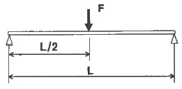
- FL
- FL/2
- FL/4
- FL/8
(정답률: 77%)
92. 세포의 괴사(Necrosis)는 세포조직이 붕괴되거나 기능이 정지되어 죽게 되는 과정이다. 다음 중 세포괴사의 직접적인 원인이 아닌 것은?
- 저온에 의한 활성도 감소
- 세균의 독소에 의한 세포의 호흡장애
- 혈액 공급 부족에 의한 빈혈성 경색
- 산에 의한 단백질 응고 또는 알칼리에 의한 세포체의 융해
(정답률: 63%)
93. 형상기억효과와 초탄성 효과를 동시에 가지고 있는 합금은?
- 폴레에틸렌(PE)
- 의료용 Co-Cr 합금
- NiTi 합금
- 탄탈럼(Ta) 합금
(정답률: 81%)
94. 구름 베어링에서 안지름을 나타내는 기호가 04일 때 안지름은?
- 10㎜
- 15㎜
- 17㎜
- 20㎜
(정답률: 81%)
95. 심장판막의 표면을 코팅하는 재료로 사용되는 세라믹스 재료는?
- 알루미나
- 하이드록시아파타이트
- 바이오 글라스
- LTP 카본
(정답률: 61%)
96. 어금니에 충치가 생겨서 상아질(dentin)에 직경 2㎜, 깊이 4㎜의 구멍을 내고 치과용 레진을 채워 넣었다. 커피를 마시는 동안 치료부위의 온도가 구강 온도보다 30℃ 상승 되었다. 이 경우 치료부위의 레진이 팽창한 부피는? (단, 열팽창계수 αresin=81×10-6/℃, αdentin=8.3×10-6/℃)
- 0.082 mm3
- 0.092 mm3
- 0.140 mm3
- 0.152 mm3
(정답률: 49%)
97. 살아있는 생체에 직접 또는 간접적으로 접촉하여 생체의 조직이나 장기 또는 생체 기능의 일부 혹은 전체를 대신하거나 보완해 주는데 사용되는 모든 재료를 정의 되는 것은?
- 생체재료
- 인공재료
- 자연재료
- 산업재료
(정답률: 82%)
98. 초음파에 대한 설명으로 옳은 것은?
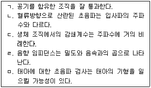
- ㄱ, ㄴ, ㄷ
- ㄱ, ㄴ, ㅁ
- ㄱ, ㄹ, ㅁ
- ㄴ, ㄷ, ㄹ
(정답률: 80%)
99. 용혈현상(hemolysis)에 관한 설명 중 옳지 않은 것은?
- 적혈구의 막이 파괴되는 현상을 의미한다.
- 정상적인 생체 내에서도 종종 발생한다.
- 적혈구가 노출되는 응력의 크기와 응력에 노출되는 시간에 의해 결정된다.
- 100000 dyne/cm2 이상의 높은 응력에서는 10-5초 정도의 짧은 시간동안 노출되어도 용혈현상이 발생할 수 있다.
(정답률: 66%)
100. 재료가 인장강도보다 낮은 조건에서 일정 기간 동안 반복적인 하중을 받게 하여 미세한 소성변형의 누적으로 응력집중을 유발하는 현상을 관찰할 수 있는 재료의 기계적 평가 방법은?
- 생체 기능성평가
- 인장 특성평가
- 굽힘 특성평가
- 피로 특성평가
(정답률: 85%)